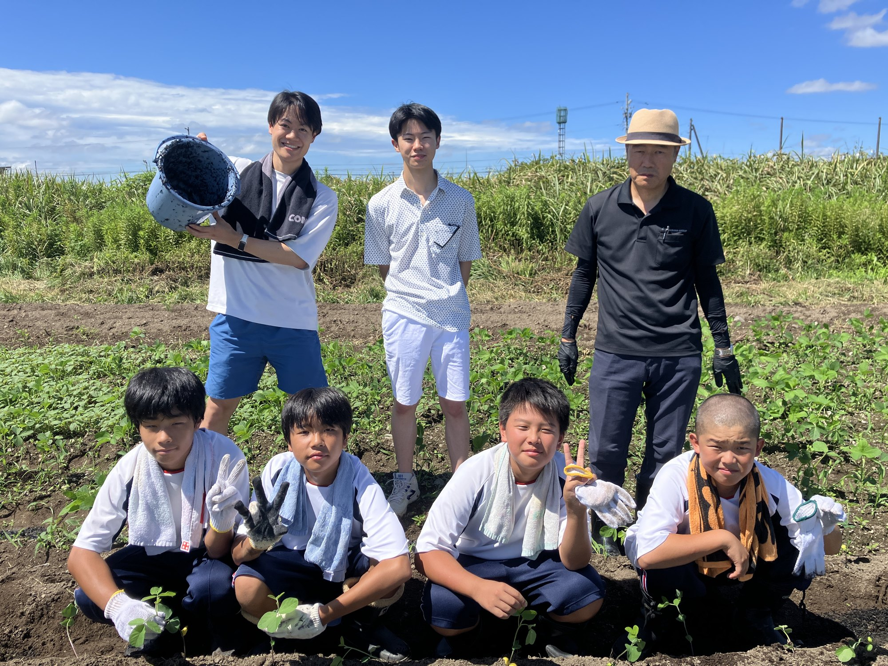
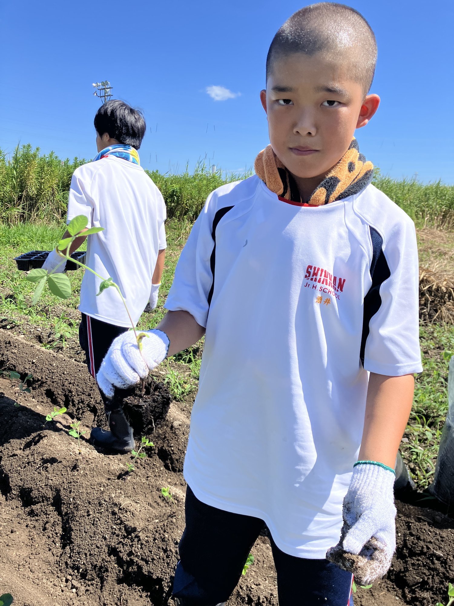
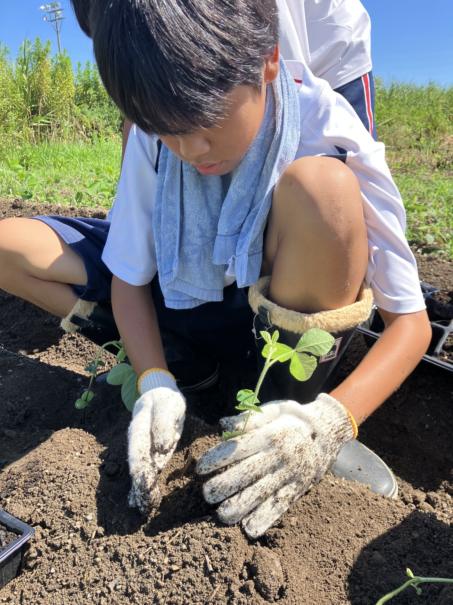
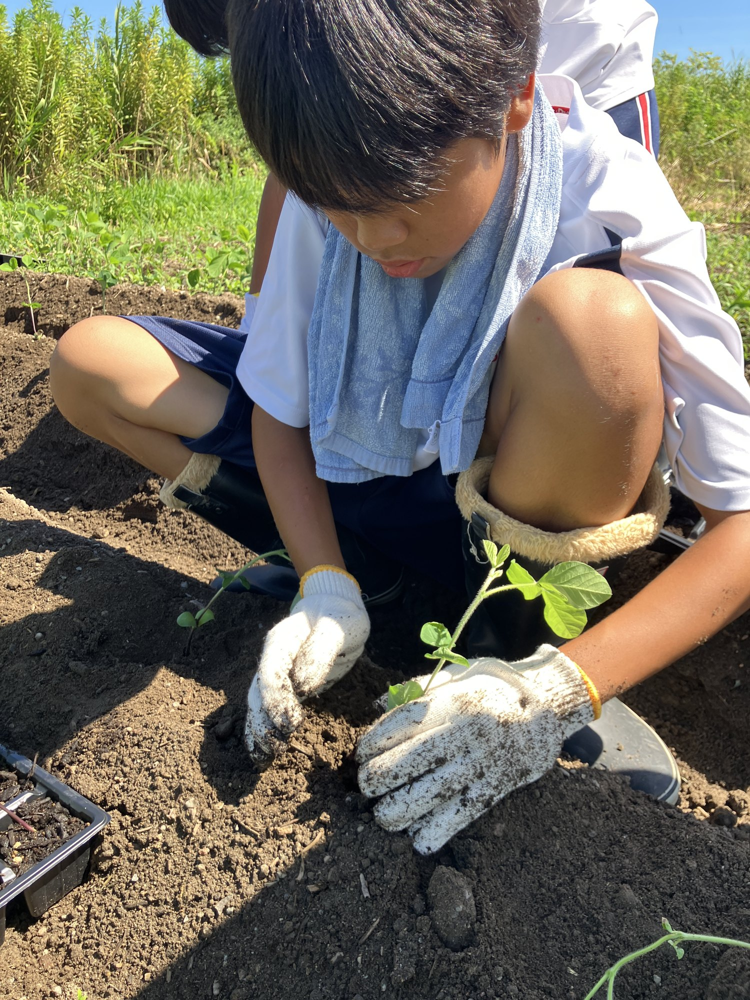
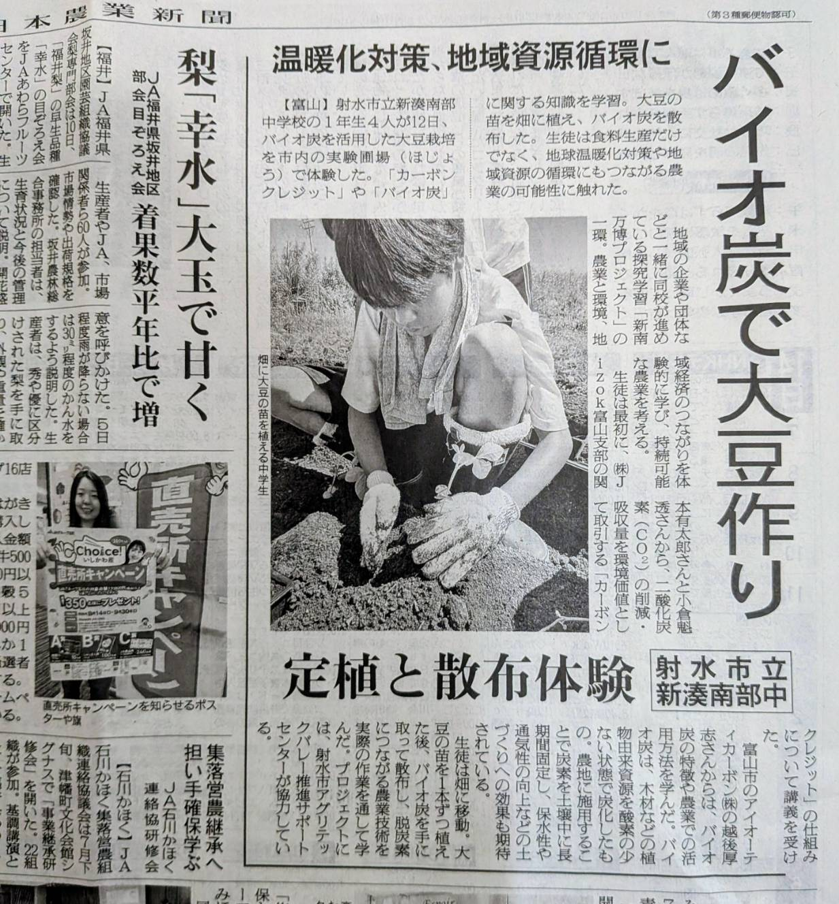
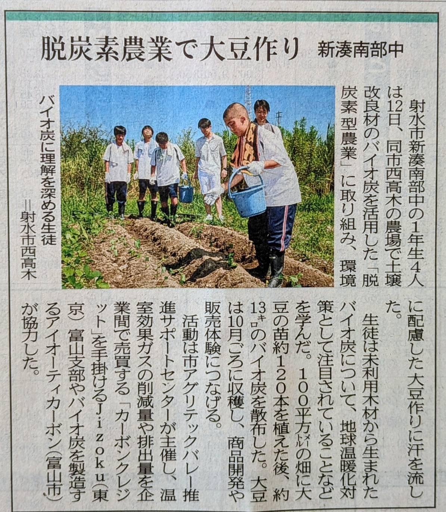
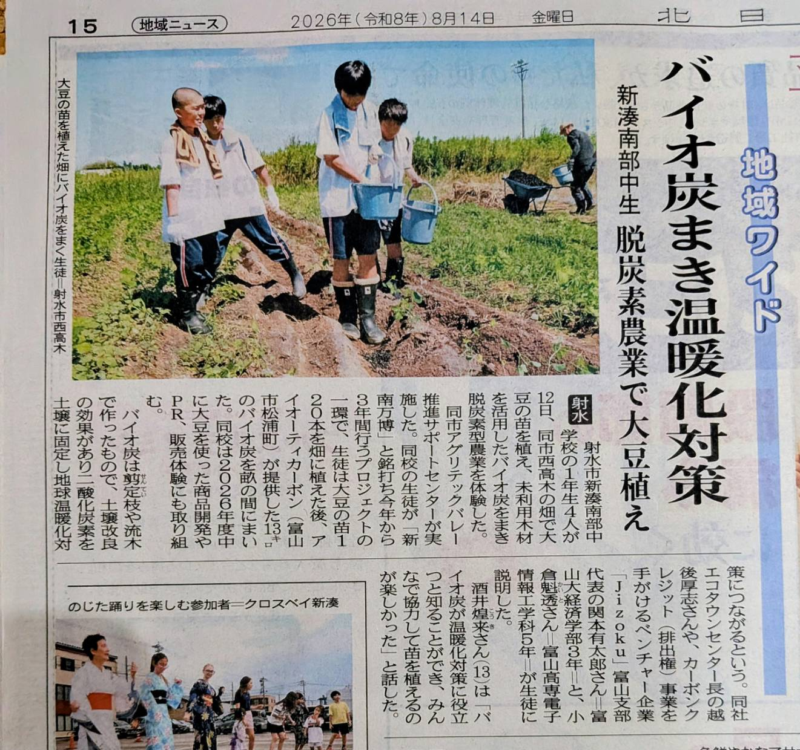

当日の実践内容
- 約100平方メートルの畑に、大豆の苗約120本を定植
- 未利用木材から作られたバイオ炭約13kgを、植えた苗の周囲へ散布
- バイオ炭の特徴や、農業における活用方法について学習
- 土に触れながら、作物の生育と環境への配慮を両立する農業を体験
August 12 / 2026
新湊南部中学校1年生の代表生徒が、市内西高木の実験ほ場で大豆の苗植えとバイオ炭の散布を体験しました。 作物を育てるだけでなく、農業と地球温暖化対策、地域資源循環のつながりを実践から学んだ活動です。
Activity Photos

畑へ散布するバイオ炭を手に取り、土づくりと炭素固定の仕組みを学びました。

元気に育つことを願いながら、苗の根や茎を傷めないよう一つずつ扱いました。

植える位置や深さを確かめ、苗が安定するよう周囲の土を整えました。

植え付けた苗の周囲へバイオ炭を施し、生育を見守る畑の準備が整いました。
Media Coverage

バイオ炭を活用した大豆の定植と散布体験が紹介されました。画像を押すと拡大表示できます。

バイオ炭への理解を深め、環境に配慮した大豆作りへ挑む様子が紹介されました。画像を押すと拡大表示できます。

苗植えとバイオ炭散布を通して、温暖化対策を学ぶ活動が紹介されました。画像を押すと拡大表示できます。